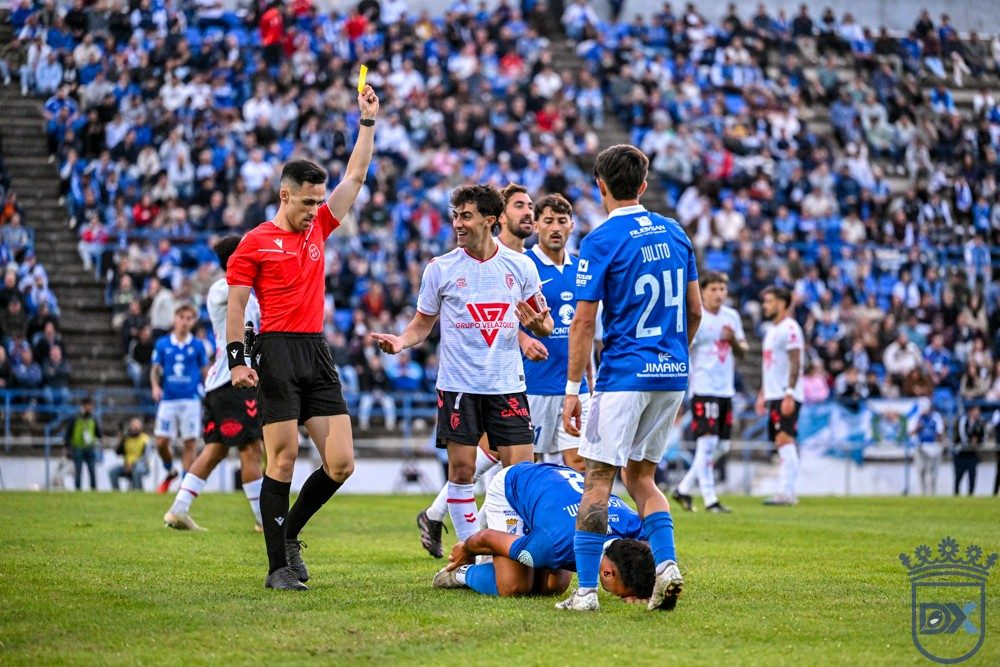

Moi and Chuma ruled out of Xerez trip to Atlético Central

Photo: Diario XerecistaThe centre-back serves a suspension for the two yellow cards he received against Antoniano, and the striker has a micro-tear in his biceps femoris that will keep him out for one to two weeks.
Xerez CD will be without Moi and Chuma this Sunday (12:00) at the Nuevo Estadio Ciudad de Alcalá, where they face Atlético Central on matchday twelve.
Moi was sent off in the 50th minute of the last game, the 2-0 win over Antoniano at Chapín, after receiving a second yellow card for a foul on the edge of the box. He had been booked for the first time before half-time. His absence forces a reshuffle at the heart of the defence.
Chuma, meanwhile, has suffered a micro-tear in the biceps femoris of his right leg. The injury is not serious, but it will keep him off the pitch for between one and two weeks. The striker played a key role against Antoniano: he won the penalty for the 1-0 and set up Mario Peregrina for the 2-0 before being substituted in the 67th minute.
Xerez arrive in Alcalá de Guadaíra on a four-match winning run and fifth in the table with 18 points.
🇪🇸 Leer en español ← Back to home